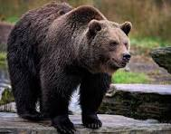

Bears
Bears are powerful mammals known for their thick fur and strong limbs, which help them survive in various environments, from icy tundras to dense forests. They are omnivores, eating everything from berries to fish, and some, like the grizzly, can weigh over 1,000 pounds. Despite their size, many bears are excellent climbers and swimmers.
- Ollie
- Mona
Giraffes

Giraffes are the tallest land animals, with long necks that help them reach leaves high in trees. Their distinctive spotted coats provide camouflage, while their powerful legs allow them to run at surprising speeds when escaping predators. These gentle herbivores communicate with low-frequency sounds often undetectable to humans.
- Frankie
- Coconut
Lions

Lions are known as the "kings of the jungle," though they primarily inhabit African grasslands and savannas. They are social cats, living in prides where females do most of the hunting while males defend their territory. Their powerful roars can be heard from miles away, warning rivals and gathering their pride.
- Mella
- Karl
Monkeys
Monkeys are intelligent and agile primates, often seen swinging through trees using their strong limbs and prehensile tails. They live in diverse habitats, from rainforests to mountains, and use a variety of vocalizations and gestures to communicate. Many species are highly social, forming close-knit groups for protection and companionship.
- Cookie
- Earl
- Banana Pudding
Alligators

Alligators are ancient reptiles that have roamed the Earth for millions of years, thriving in freshwater swamps, rivers, and lakes. With their armored bodies and powerful jaws, they are formidable predators that ambush prey with lightning-fast strikes. Despite their fearsome reputation, they play a vital role in maintaining wetland ecosystems.
- Wren
- Aspen
- Mika